대흥정밀(DHSTEEL)은 소구경 원형 파이프(22Φ, 25Φ, 38Φ, 50Φ)를 전문으로 취급하며, 스웨이징 전용기, 확관·축관 포밍기, 유압/CNC 밴더, 정밀 드릴링 라인을 가동하여 철재 가구 다리/프레임, 기계·기구물 결합 부품, 안전 바 등 정밀 파이프 가공품을 공장직판 최저 단가와 엄격한 공차로 맞춤 생산·직송 공급합니다.
시흥 직영 공장 전경 및 핵심 가공 설비 인프라
소구경 파이프 대량 양산 및 맞춤 임가공 라인
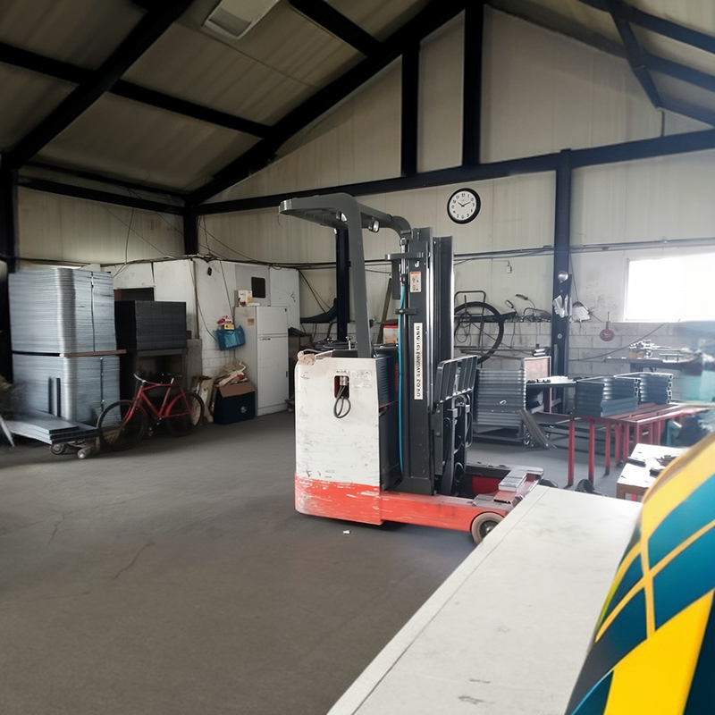
시흥 직영 300평 가공 라인
규격 원자재 실내 적재 보관
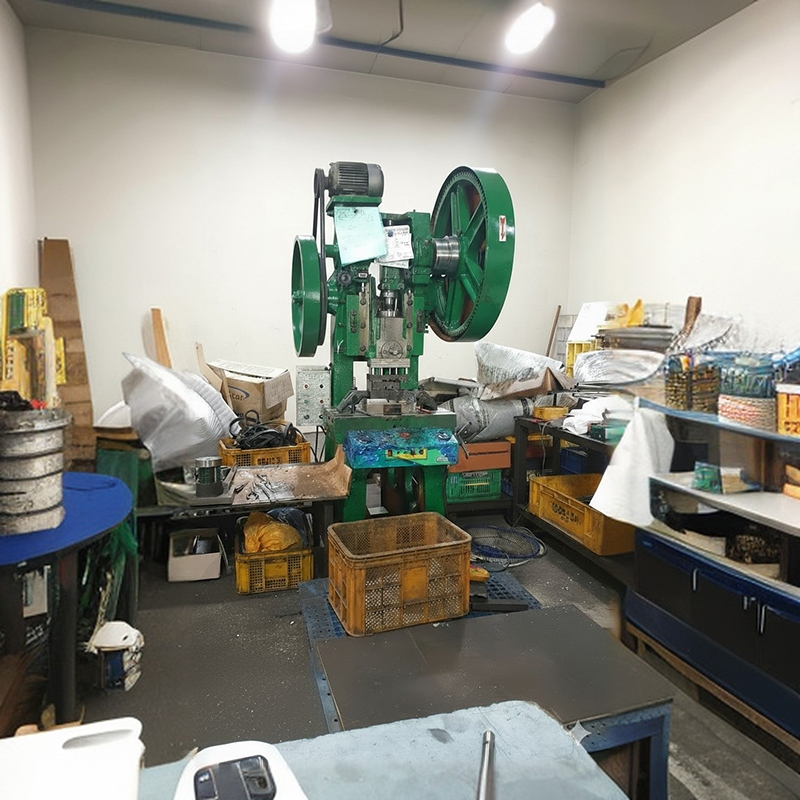
대용량 유압 프레스 라인
단부 성형 및 정밀 펀칭/피어싱
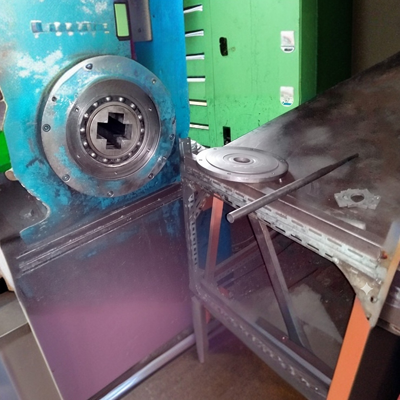
정밀 스웨이징/포밍 금형
죠(Jaw) 공법 단부 축관 가공기
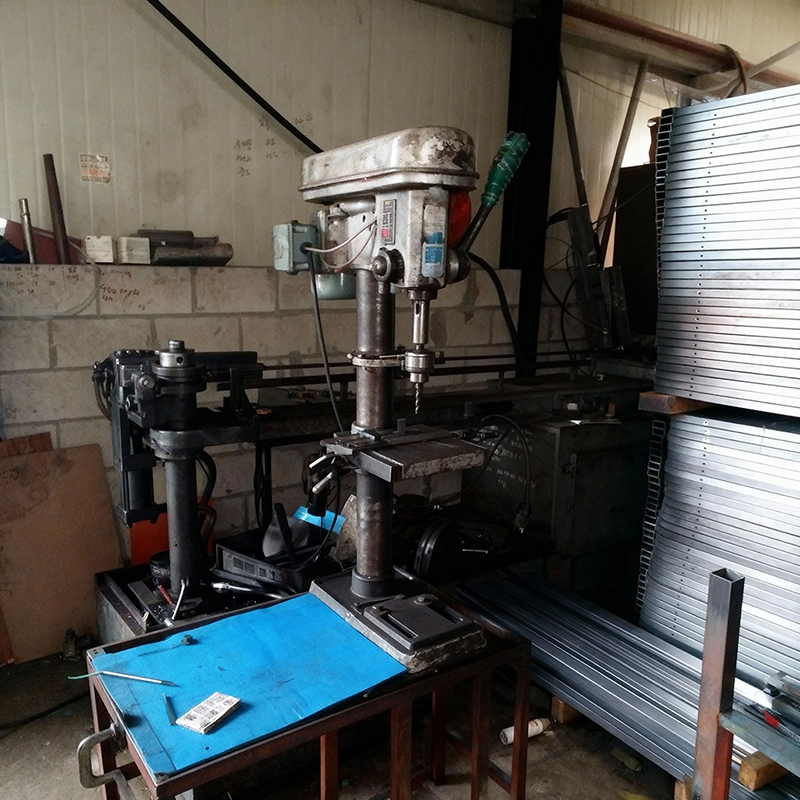
정밀 수직 드릴링 설비
다축 드릴링 및 관통 홀 가공
대흥정밀 핵심 보유 설비 제원 및 가공 능력 요약 (소구경 중심)
설비 및 공정 구분
보유 라인
가공 가능 규격 범위
허용 공차
주요 가공 품목 및 용도
파이프 확관 (Expanding)
단포밍기, 유압확관기
외경 22Φ ~ 50Φ (단부 50mm 이하)
±0.10mm
가구 결합 조인트, 슬리브 연결관
파이프 축관 (Reducing/Swaging)
로터리 스웨이징, 죠가공기
원형 22Φ, 25Φ, 38Φ, 50Φ (길이 400mm 이하)
±0.08mm
원추형 가구 다리, 안테나 폴, 결합축
파이프 밴딩 (CNC Bending)
유압·CNC 멀티 벤더
원형 22Φ ~ 50Φ / 각파이프 20~40각
±0.2° / ±0.15mm
가구 곡선 프레임, 안전 바, 기구물
복합 임가공 (타공/절단)
고속 톱기, 수직 드릴러
정밀 면취, 관통 타공, 단면 슬로팅
±0.10mm
볼트 체결 홀, 브라켓 용접 어셈블리
대흥정밀 B2B 파트너십 핵심 경쟁력 (4대 약속)
① 공장 직영 원가 절감
중간 벤더 유통 마진 없이 최대 15% 이상 가공 단가를 절감해 드립니다.
② 정밀 금형 공차 관리
30년 금형 제작 노하우로 ±0.1mm 이내 초정밀 공차를 전수 보증합니다.
③ 무상 초도 샘플 제작
도면 또는 현물 확인 후 무상 초도 샘플을 제작하여 조립 품질을 검증합니다.
④ 24시간 신속 견적·납품
도면 및 사진 접수 즉시 당일 맞춤 견적 회신 및 전국 직송 시스템 운영.
정밀 파이프 가공 기술 제원 ｜ 소구경 확관(Expansion) & 축관(Reduction)
대흥정밀 B2B 카탈로그
01
파이프 확관 (Expanding / Flaring / Beading)
가공 범위: 22Φ ~ 50Φ 원형 파이프 (단부 가공 50mm 이하)
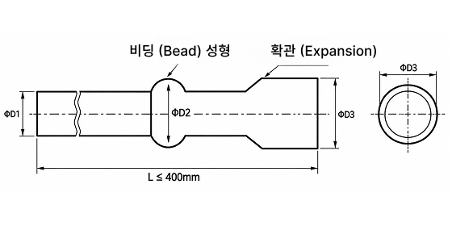
소구경 원형 파이프(22Φ, 25Φ, 38Φ, 50Φ)의 단부(End) 내외경을 균일하게 확장하거나, 단차 턱(Step) 성형 및 원형 비딩(Beading)을 형성하여 상대 부품과의 슬리브 결합, 프레임 체결력 극대화, 조립 정밀도 향상을 구현합니다.
적용 규격: 22Φ, 25Φ, 38Φ, 50Φ (두께 0.7~2.3t)
성형 방식: 펀치 유압 확장식, 회전 롤 비딩 성형
가공 한계: 단부 가공 50mm 이하 (공차 ±0.10mm)
주요 용도: 가구 프레임 조인트, 결합용 슬리브, 연결관
원관 외경(Φ)
적용 두께(t)
최대 확관 외경(mm)
확관 유효 깊이
정밀 공차
주요 결합 형태
22Φ
0.7 ~ 1.6t
최대 Ø26.5mm
10 ~ 45mm
±0.10mm
내경 삽입형 슬리브 결합
25Φ
0.8 ~ 1.8t
최대 Ø30.0mm
15 ~ 50mm
±0.10mm
단차 비딩 턱 체결 및 조립
38Φ
1.0 ~ 2.0t
최대 Ø45.0mm
15 ~ 50mm
±0.12mm
프레임 연결 조인트 체결
50Φ
1.2 ~ 2.3t
최대 Ø58.0mm
20 ~ 50mm
±0.12mm
메인 지지관 슬리브 체결
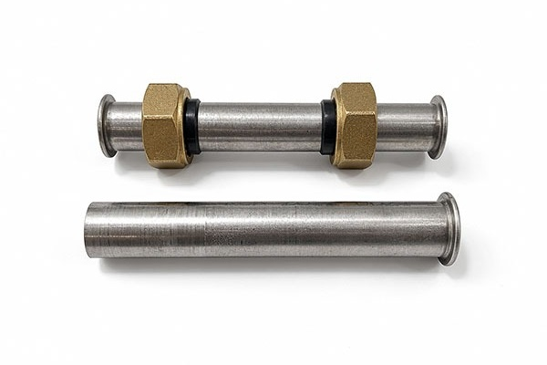
다단 비딩 확관 가공품
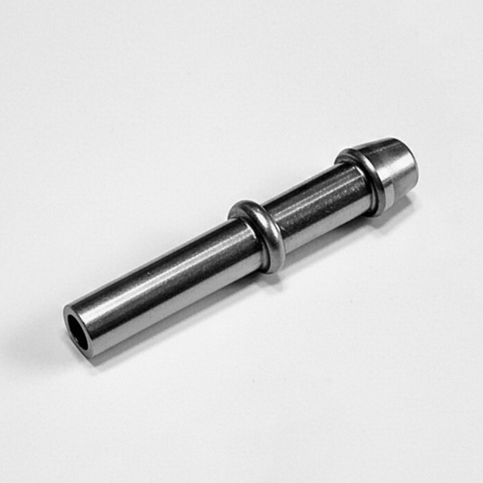
단차 슬리브 포밍 샘플
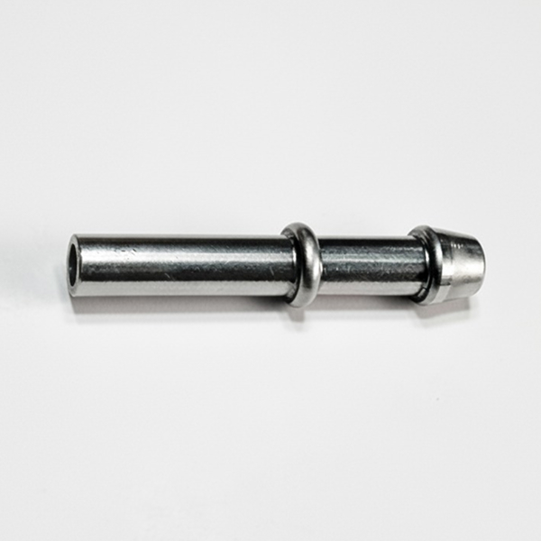
플레어링 정밀 확관
02
파이프 축관 & 스웨이징 (Reducing / Rotary Swaging)
가공 가능 규격: 22Φ, 25Φ, 38Φ, 50Φ (길이 400mm 이하)
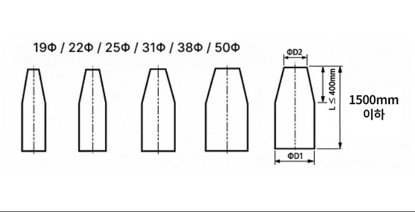
원형 파이프 22Φ, 25Φ, 38Φ, 50Φ 규격의 축관, 스웨이징 가공(길이 400mm 이하, 단부 50mm 이하)을 전문으로 처리합니다. 전용 죠(Jaw) 금형을 사용하여 용접 없이 하나의 파이프를 가늘고 매끄러운 원추형(Taper)으로 압축 성형하여 탁월한 강도와 미려한 디자인을 완성합니다.
적용 규격: 원형 22Φ, 25Φ, 38Φ, 50Φ 파이프
가공 형태: 원추 테이퍼형(Taper), 단차 축관형(Step)
가공 한계: 가공 길이 400mm 이하, 단부 50mm 이하
주요 용도: 철재 의자/책상 다리 프레임, 기계 결합부 부품
원관 외경(Φ)
적용 두께(t)
축관 후 선단 최소경
테이퍼 가공 길이
정밀 공차
적용 가공 제품군
22Φ
0.8 ~ 1.6t
최소 Ø10.0mm
최대 250mm
±0.08mm
슬림 의자 다리, 안테나 폴대
25Φ
0.8 ~ 1.8t
최소 Ø12.0mm
최대 300mm
±0.08mm
인테리어 가구 프레임 다리
38Φ
1.0 ~ 2.0t
최소 Ø18.0mm
최대 400mm
±0.10mm
책상 다리, 기계 결합축 부품
50Φ
1.2 ~ 2.3t
최소 Ø25.0mm
최대 400mm
±0.10mm
중하중용 지지 기둥, 메인 프레임
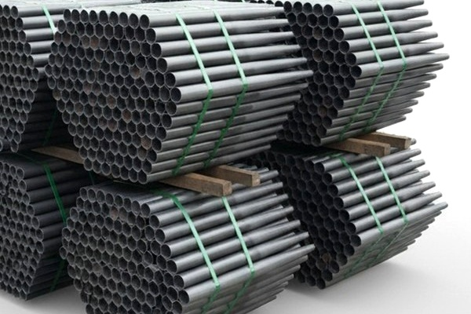
원추 테이퍼 축관
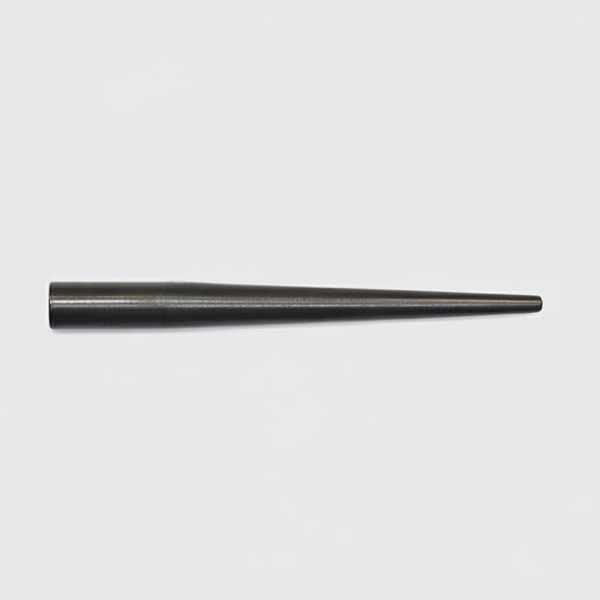
단차 스웨이징 샘플
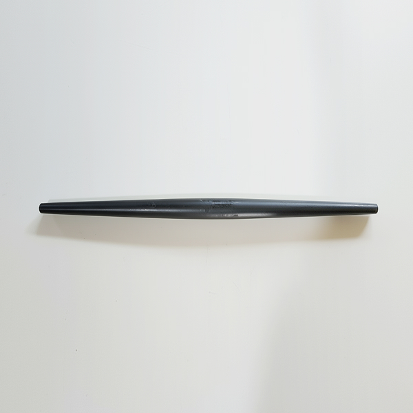
초경량 지지관 축관
정밀 파이프 가공 기술 제원 ｜ CNC 밴딩 & 복합 임가공
대흥정밀 B2B 카탈로그
03
CNC 파이프 밴딩 (CNC & Hydraulic Tube Bending)
원형 22Φ~50Φ ｜ 각파이프 20~40각 (각도 1°~180°)
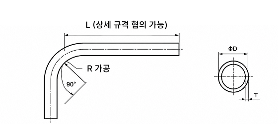
고성능 CNC 벤더 및 맨드릴(Mandrel) 내부 지지 공법을 적용하여 파이프 외경의 주름(Wrinkle)과 단면 찌그러짐(Ovality)을 최소화합니다. 소구경 원형 및 각파이프의 1°~180° 곡선 굽힘 및 3차원 공간 복합 밴딩을 정밀하게 수행합니다.
가공 가능 형상: 원형 파이프(22Φ~50Φ), 각파이프(20~40각)
곡률 반경(CLR): 파이프 외경 대비 1.5D ~ 4.0D 맞춤 금형 보유
품질 관리: 각도 오차 ±0.2° 이내, 단면 편평율 95% 이상 유지
주요 용도: 가구 곡선 프레임, 헬스기구, 장비 안전 바, 배관재
파이프 규격(원형/각관)
적용 두께(t)
표준 곡률 반경(CLR R)
최대 굽힘 각도
각도/치수 공차
가공 공법 특징
원형 22Φ ~ 25Φ
0.8 ~ 1.8t
R30 ~ R80mm
180° 연속 곡률
±0.2° / ±0.15mm
고속 CNC 회전 드로잉 밴딩
원형 38Φ ~ 50Φ
1.0 ~ 2.3t
R60 ~ R150mm
180° 단독/다단 굽힘
±0.2° / ±0.15mm
맨드릴 주름 방지 내부 지지 가공
각파이프 20x20 ~ 20x40각
1.0 ~ 2.0t
R60 ~ R160mm
90° ~ 120°
±0.3° / ±0.20mm
각관 전용 금형 왜곡 방지 가공
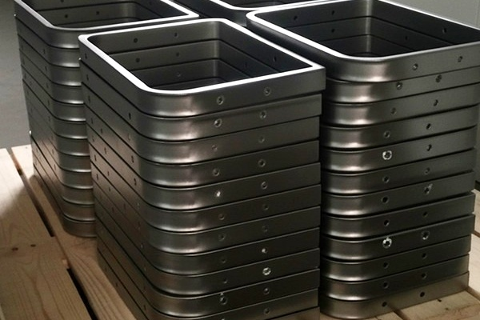
가구 곡선 밴딩
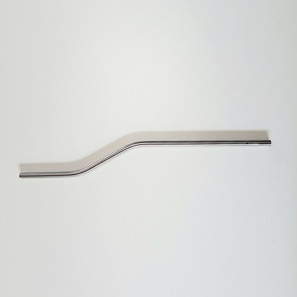
3차원 복합 공간 밴딩
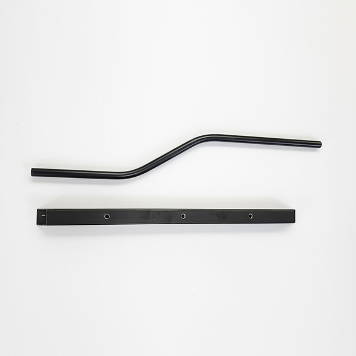
각파이프 정밀 밴딩
04
복합 정밀 임가공 (관통 드릴링 · 프레스 펀칭 · 절단 · 면취 · 조립)
원자재 조달부터 완성품 조립까지 One-Stop 일관 공정
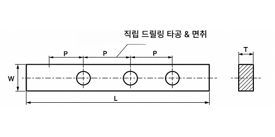
단순 파이프 절곡에 그치지 않고, 고속 정밀 회전 절단, 양단 버(Burr) 제거 면취, 프레스 펀칭 홀타공, 수직 다축 관통 드릴링/탭핑, 브라켓 용접 조립까지 도면 사양 그대로 완성품 일괄 조달을 실현합니다.